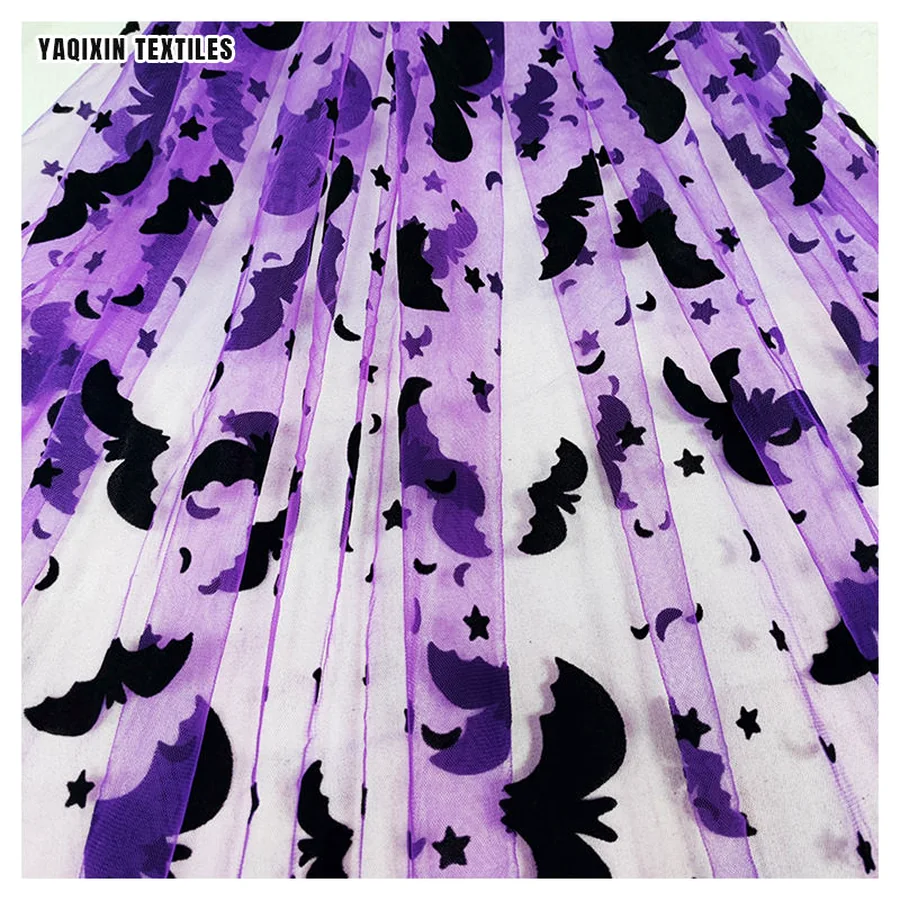
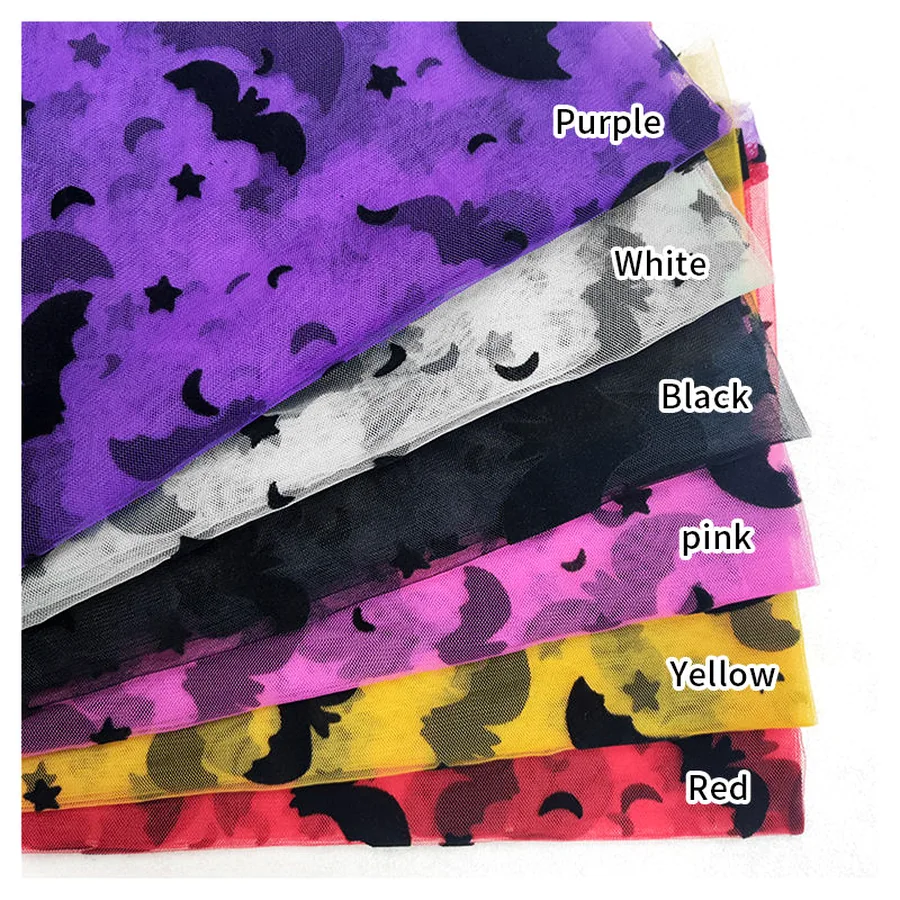
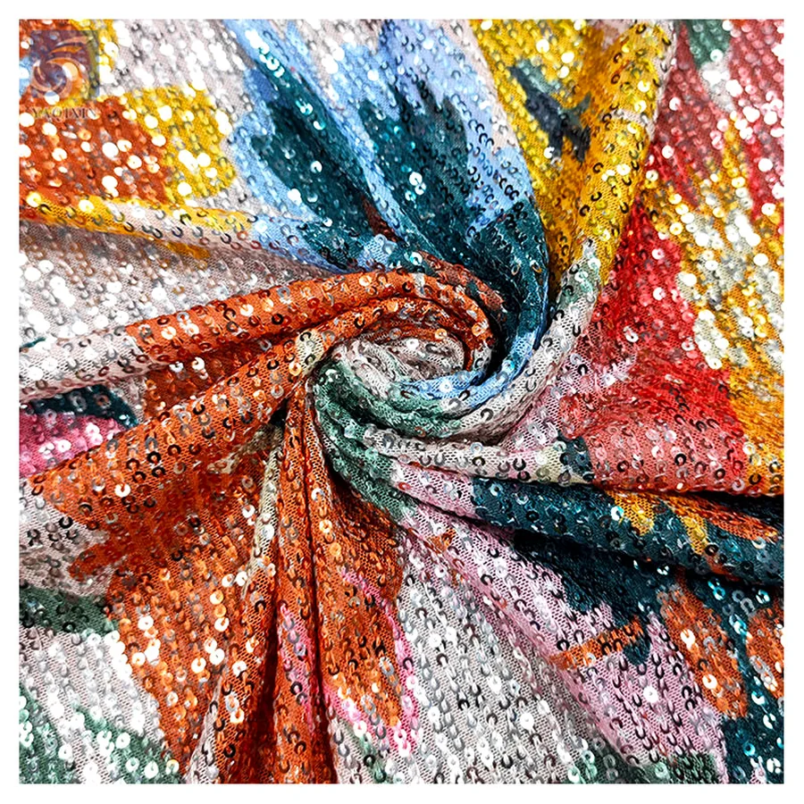
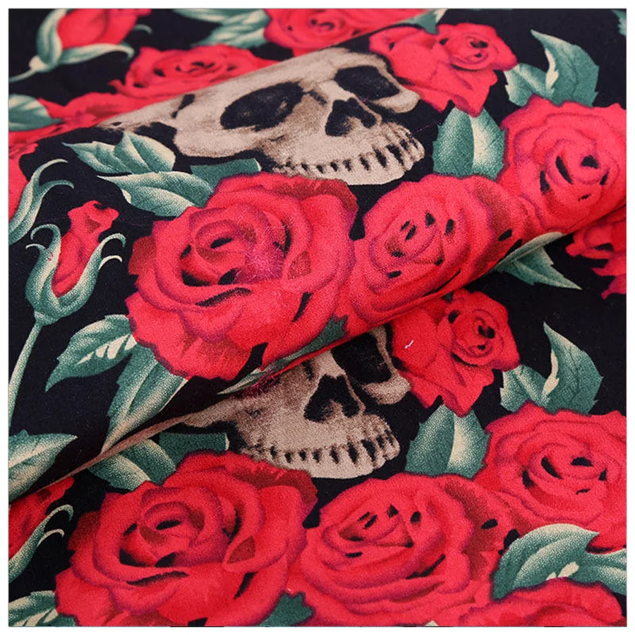
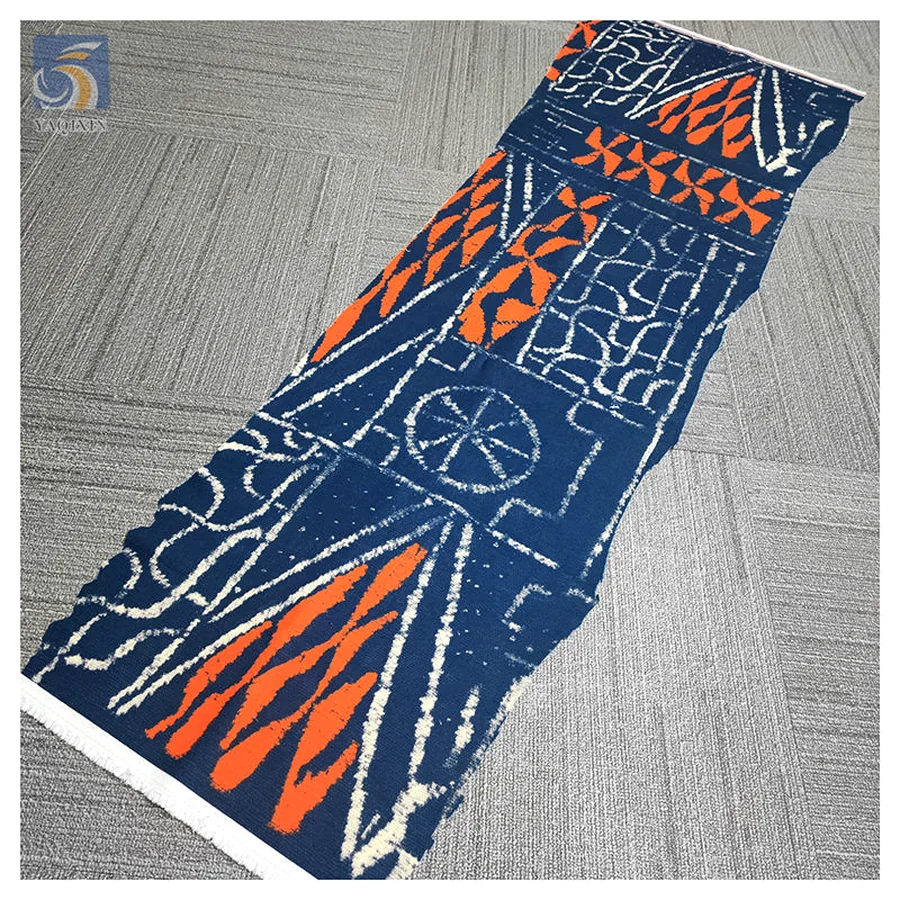
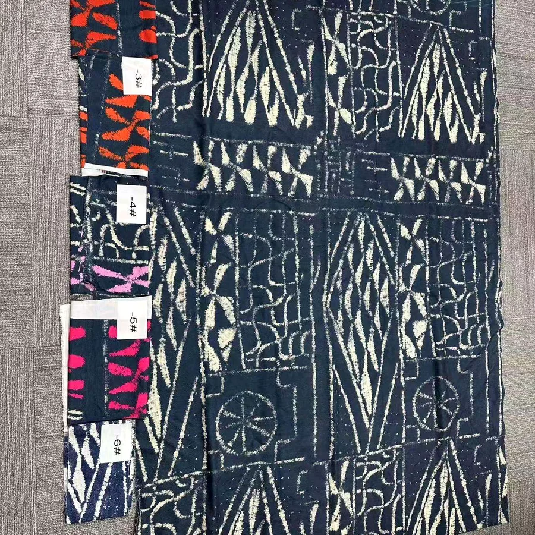
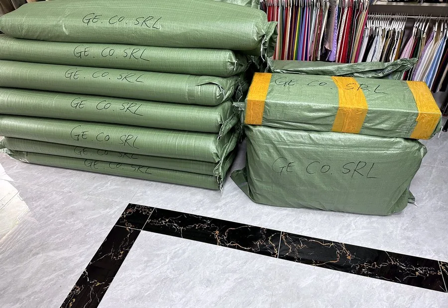
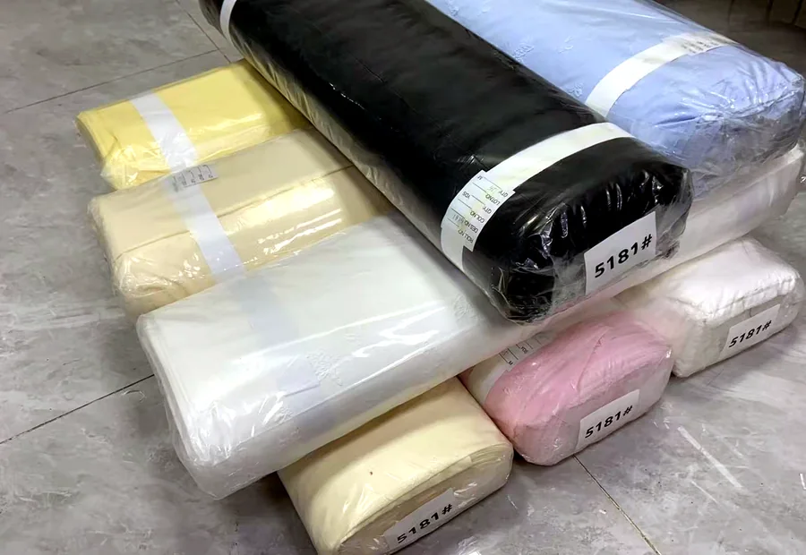
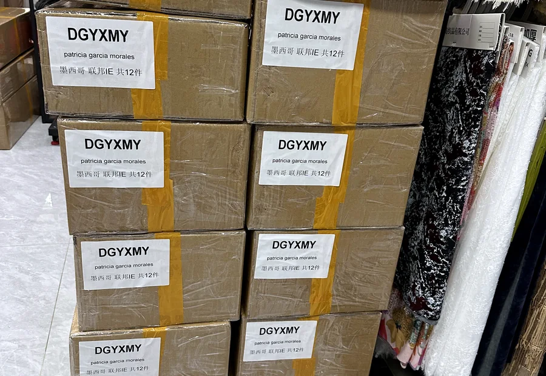

Route 01
Custom Flocking
Raised velvet effects and buyer colorways for seasonal apparel programs.
FlockingColorway
Customize capability
A focused route for overseas apparel buyers who need custom fabric development, practical sampling, roll packing, carton marks, certificate visibility and export-ready order preparation from one Guangzhou textile supplier.


Custom cases
Use these examples as conversation starters. The final process depends on base fabric, artwork complexity, color target, quantity, application and delivery window.


Raised velvet effects and buyer colorways for seasonal apparel programs.

Shine density, layout and base fabric can be matched for fashion use.

Artwork-led print direction, color checking and sample discussion.


Pattern placement and color coordination for wholesale collections.
Packaging customization
For B2B buyers, the order does not end at a fabric sample. YAQIXIN can discuss roll packing, polybag protection, carton marks, buyer labels, export cartons and destination-market requirements before the quotation is finalized.

Roll packing and bundle preparation
Polybag protection
Carton marks and buyer labelsWorkflow
The section should make the process feel clear before the buyer sends artwork, samples or order requirements.
Receive reference picture, artwork, color target, fabric type, width and application.
Recommend flocking, sequin embroidery, digital print or pattern development route.
Align sample direction, MOQ reference, price logic and expected production timing.
Confirm fabric base, color, quantity, production notes and buyer approval route.
Discuss roll packing, polybag, carton marks, labels and receiving requirements.
Coordinate shipment readiness, destination market and quotation document needs.
What buyers should send
This block can guide buyers who are not sure what to prepare for custom fabric or packaging discussions.
Supplier proof
Certification does not replace sample confirmation, but it gives overseas buyers a clearer supplier identity before they share artwork, target colors, custom packaging requirements or bulk order details.
FAQ
Short answers for buyers searching for custom fabric supplier, custom printed fabric, packaging support and verified fabric manufacturer information.
Yes. Send artwork, reference pictures, target color, base fabric, quantity and usage. The team will suggest a practical process and sample route.
Yes. Roll packing, polybag protection, carton marks, buyer labels and export carton details can be discussed with quotation and shipment planning.
Yes. For custom work, sample direction and approval details should be aligned before bulk order confirmation.
MOQ depends on fabric base, process, artwork complexity and order route. Send quantity targets early so the team can check realistic options.
Yes. The SGS supplier assessment image is available on this page before you start a detailed custom inquiry.
Use the main inquiry form or WhatsApp route. Include artwork, fabric type, packing needs and delivery target for a faster reply.
Send fabric type, color target, width, quantity, application, packing request and delivery target. YAQIXIN will reply with a suitable custom process, MOQ logic and export preparation route.